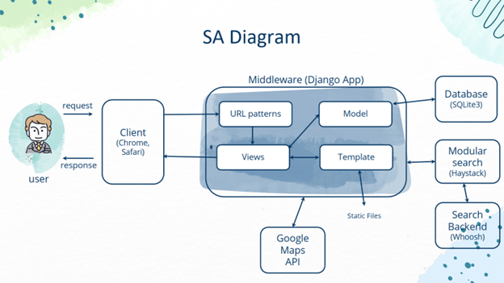

Las aplicaciones web se basan en una arquitectura cliente/servidor: por un lado está el cliente (el navegador, explorador o visualizador) y por otro lado el servidor (el servidor web). Existen diversas variantes de la arquitectura básica según cómo se implementen las diferentes funcionalidades de la parte servidor.